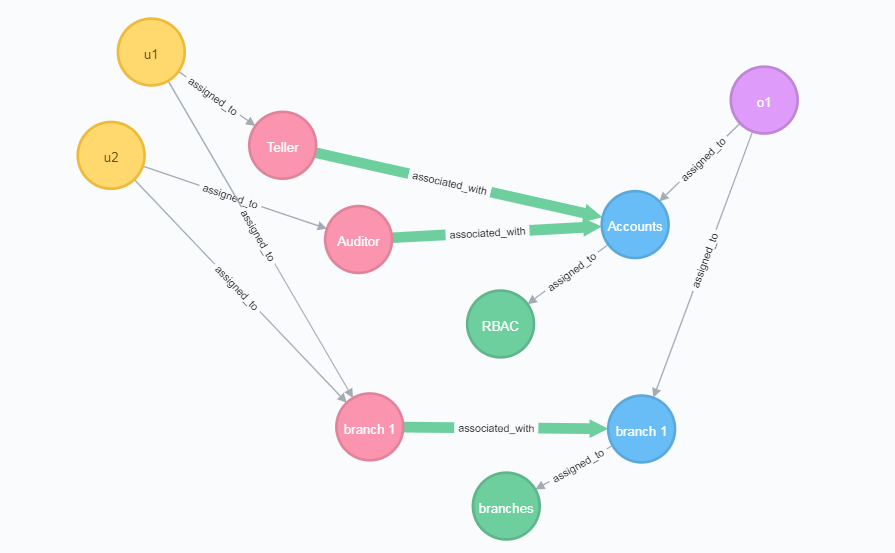

Getting Started
Bank Teller
To introduce you to the Policy Machine Core library we'll walk through a simple bank teller example. We'll create a graph, query the access state of the graph and audit the graph.
Access Control State
u1can read and writeo1u2can reado1
Graph Configuration Summary
- Users:
u1,u2 - An object,
o1 - Two policy classes:
RBACandBranches- RBAC
- o1 is assigned to accounts
- u1 is a Teller that has read and write permissions on accounts
- u2 is an Auditor that has read permissions on accounts
- Branches
- u1 and u2 are both assigned to the Branch 1 user attribute
- o1 is assigned to the Branch 1 object attribute
- the Branch 1 user attribute has read and write permissions on the Branch 1 object attribute
- RBAC
Building the Graph
// 1. Create a new Graph instance. For this example, we'll use the `MemGraph` which is an in memory implementation of the Graph interface.
Graph graph = new MemGraph();
// 2. Create the user nodes `u1` and `u2`.
Node user1Node = graph.createNode(rand.nextLong(), "u1", U, null);
Node user2Node = graph.createNode(rand.nextLong(), "u2", U, null);
// 3. Create the object, `o1` that will be the target of the access queries.
Node objectNode = graph.createNode(rand.nextLong(), "o1", O, null);
// 4. Create the `RBAC` policy class node.
Node rbacNode = graph.createNode(rand.nextLong(), "RBAC", PC, null);
// 5. Create an object attribute for the `Accounts`.
Node accountsNode = graph.createNode(rand.nextLong(), "Accounts", OA, null);
// 6. Create the `Teller` and `Auditor` user attributes.
Node tellerNode = graph.createNode(rand.nextLong(), "Teller", UA, null);
Node auditorNode = graph.createNode(rand.nextLong(), "Auditor", UA, null);
// 7. Assign the `Accounts` object attribute to the `RBAC` policy class node.
graph.assign(accountsNode.getID(), rbacNode.getID());
// 8. Assign the object, `o1`, to the `Accounts` object attribute.
graph.assign(objectNode.getID(), accountsNode.getID());
// 9. Assign `u1` to the `Teller` user attribute and `u2` to the `Auditor` user attribute.
graph.assign(user1Node.getID(), tellerNode.getID());
graph.assign(user2Node.getID(), auditorNode.getID());
// 10. Create the associations for `Teller` and `Auditor` on `Account` in RBAC. `Teller` has read and write permissions, while `Auditor` just has read permissions.
Set rw = new HashSet<>(Arrays.asList("r", "w"));
Set r = new HashSet<>(Arrays.asList("r"));
graph.associate(tellerNode.getID(), accountsNode.getID(), rw);
graph.associate(auditorNode.getID(), accountsNode.getID(), r);
// 11. Create the `Branches` policy class.
Node branchesNode = graph.createNode(rand.nextLong(), "branches", PC, null);
// 12. Create an object attribute for `Branch 1`.
Node branch1OANode = graph.createNode(rand.nextLong(), "branch 1", OA, null);
// 13. Assign the branch 1 OA to the branches PC
graph.assign(branch1OANode.getID(), branchesNode.getID());
// 14. Create the `Branch 1` user attribute
Node branches1UANode = graph.createNode(rand.nextLong(), "branch 1", UA, null);
// 15. Assign the object, `o1`, to the `Branch 1` object attribute
graph.assign(objectNode.getID(), branch1OANode.getID());
// 16. Assign the users, `u1` and `u2`, to the branch 1 user attribute
graph.assign(user1Node.getID(), branches1UANode.getID());
graph.assign(user2Node.getID(), branches1UANode.getID());
// 17. Create an association between the `branch 1` user attribute and the `branch 1` object attribute.
//This will give both users read and write on `o1` under the `branches` policy class.
graph.associate(branches1UANode.getID(), branch1OANode.getID(), rw);
Making Access Decisions
// 18. Test the configuration using the `PReviewDecider` implementation of the `Decider` interface.
// The constructor for a `PReviewDecider` receives the graph we created and a list of prohibitions.
// Since no prohibitions are used in this example, we'll pass null.
Decider decider = new PReviewDecider(graph);
// 19. Check that `u1` has read and write permissions on `o1`.
Set<String> permissions = decider.listPermissions(user1Node.getID(), objectNode.getID());
assertTrue(permissions.contains("r"));
assertTrue(permissions.contains("w"));
// 20. Check that `u1` has read permissions on `o1`.
permissions = decider.listPermissions(user2Node.getID(), objectNode.getID());
assertTrue(permissions.contains("r"));
Auditing the Graph
Let's audit the graph to see why u1 has permissions on o1.
Auditor auditor = new PReviewAuditor(graph);
Explain explain = auditor.explain(user1Node.getID(), objectNode.getID())
The result of the explain method will be structured as:
operations: [r, w]
policyClasses:
RBAC
operations: [r, w]
paths:
- u1-Teller-Accounts-o1 ops=[r, w]
branches
operations: [r, w]
paths:
- u1-branch 1-branch 1-o1 ops=[r, w]
Visualization
Below is a visual representation of the graph created in the bank teller example. 
{kind=link}